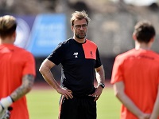

Fanserwis LFC

Trening na teneryfie - wideo
Prezentujemy filmik z kolejengo treningu zespołu na zgrupowaniu w Teneryfie, gdzie zawodnicy, którzy nie biorą udziału w rozgrywkach reprezentacyjnych, szlifują formę przed resztą sezonu
Zdjęcia z meczu legend
Prezentujemy Państwu wybrane zdjęcia z wczorajszego, wyjątkowego meczu na Anfield, w którym legendy Liverpoolu rywalizowały z drużyną Realu Madryt. Gospodarze wygrali to spotkanie 4:3.
Występ Firmino z Urugwajem - wideo
Przedstawiamy Państwu kompilacje najlepszych zagrań Roberto Firmino w meczu z Urugwajem. Canarinhos okazali się lepsi od swoich rywali i zdecydowanie zwyciężyli 4:1.